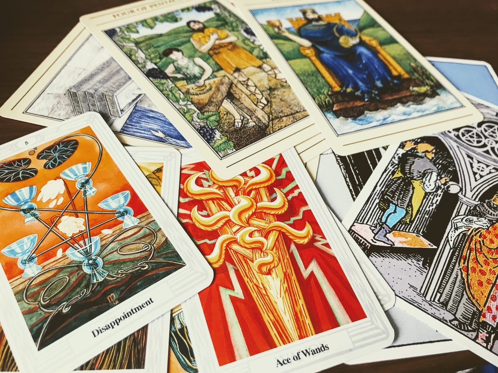
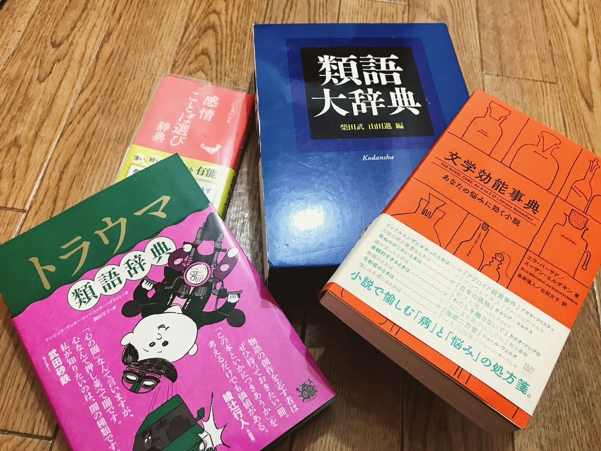
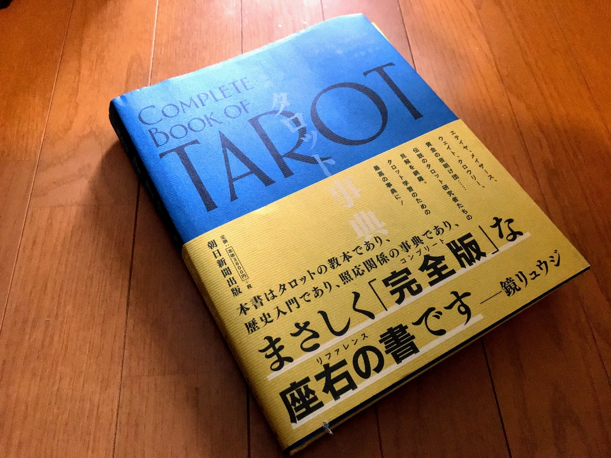
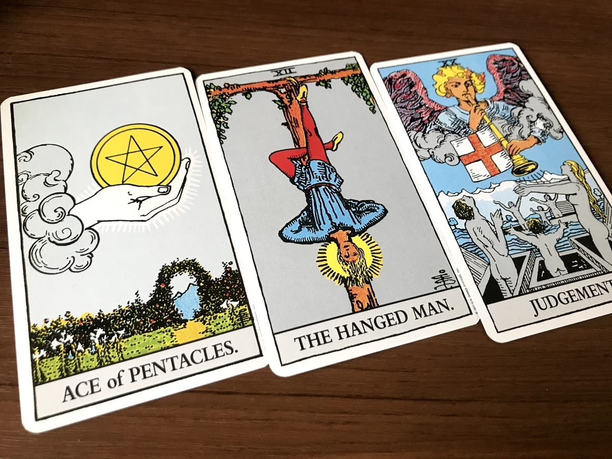
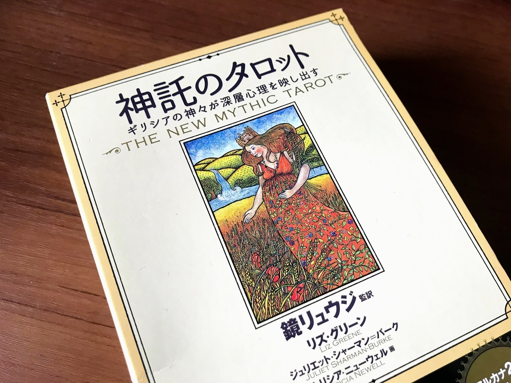
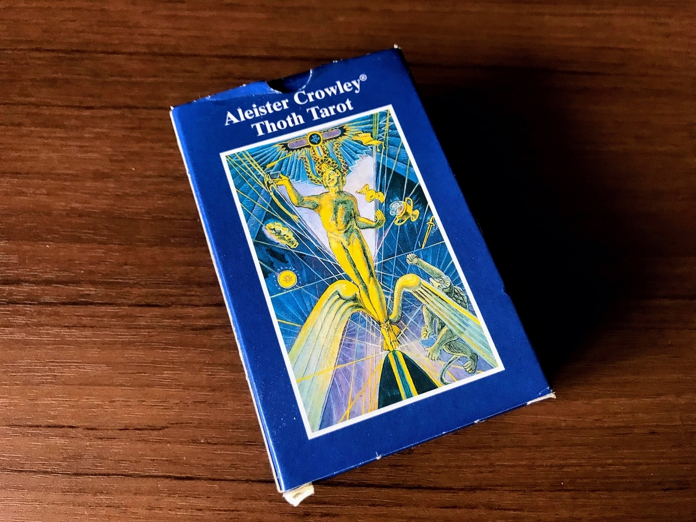
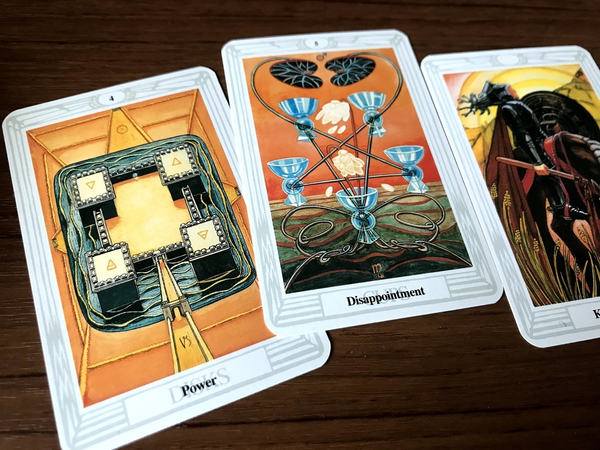
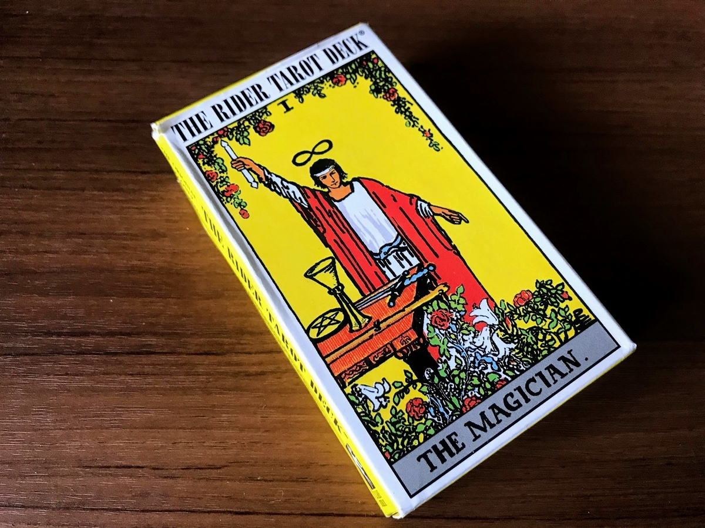

この記事は、書いていたらつい長くなってしまったけど、自分がタロットカードを思考整理のツールに使う理由をまとめたくて書いた。（土日にアップしようと思ってたけど、写真撮ったり中身を整理していたら時間が足りなくなったので、週明けに食い込んだ。）
「思考ツールとしてのタロット」という本が既にあるので、ブログタイトルを何にするかすごく迷った挙げ句、自分はタロットカードのライブラリとしての魅力にフィーチャーしたいなと思って、似たようなタイトルではあるけれどこれに決めた。
タロットカードはすごく奥が深いけど、単純に絵柄がすごく美しくて、その芸術的価値だけでもとても集めていて楽しいので、何かしらの参考になればなと思う。
とりあえず、思考整理のツールとしてタロットカードを使う理由を、タロットカードの辞書性というところにフィーチャーして書いていきたいと思う。なので、とりあえず自分の辞書好きなところから紹介。

さて、どうしてなのか自分は昔から辞典というものがものすごく好きで、大学に入って初めて買った本は実は「類語大辞典」だったりする。
ちょっと記事のタイトル自体からは脱線するけれど、この類語大辞典はものすごく面白くて、普通の類語辞典のようにある言葉の類語を引く、という機能ももちろんあるのだけれど、一番のミソは 言葉の大分類を作り、似た言葉を同じ場所に集めている という点にある。
自分が類語辞典にハマるきっかけになったこの類語大辞典は、出版からだいぶたった今でも全く色あせてない。似た意味の言葉は近いページにある というのがすごく画期的だし、人間の頭の中にある概念というのがどういう分類ができて、同じ感情や動作でもどの程度のベクトルを持っているのかを行間から感じることができる。
機械学習がもてはやされる昨今で「真の情報量」というのがとても大事ないま、言葉が実際に持っている実際の情報量を大分類・中分類・小分類という観点で分類したと考えると、すごく貴重な資料だし、大切な読み物だと思う。（もちろん、言葉の持っている情報量ってもっともっと多いと思うけど。）
ただ一応補足しておくと、単にスピーチ原稿とかの語彙を広げるという意味では、普通の類語辞典の方が圧倒的に使いやすいと思う。
さて、だいぶ脱線したけれど、とにかく前述の通り、自分は類語辞典が大好きで、読みもしないのに〇〇類語辞典と名がつく辞典は大抵購入しては、部屋の隅の本棚にそっとしまってある。
自分なんで類語辞典が好きなんだろうなーと時々思うのだけれど、一つはこうして一定の分量の執筆をすることがたまにあるというのと、あと、人間の思考・感情のライブラリとして大好きなのだと思う。
自分が考えていることって、なかなか全てを言語化することは難しいのだけれど、そういう言葉にしづらい曖昧な感情や仕草には、実は言葉が既に割り当てられてたりする。そのどれもが、すごく哀愁があって情緒があって、好き。人間の心の機微というものがすごく感じられて、落ち着く。
それで、そういう人間模様を本から読み解くのが自分は好きらしくて、ときどき小説を読んでは感動するのだけれど、それでもやっぱり、いくら本を読んだとしても、自分自身の行動や決断には結局迷う。
そんなとき、自分のツールの一つとしてあるときから日々欠かさず使うようになったのが、「タロットカード」だった。

なぜタロットカードが自分にしっくりきたのかと思うと、やっぱりその辞書性だと自分は思う。例えば自分がほぼ毎日欠かさず読んでる「完全版タロット辞典」。この本は本当に面白くて、なんというか、類語辞典以上に類語辞典だなぁと自分は素朴に思う。
もっと正確に言えば、感情の辞典とでもいうべきか。とにかく、人生の典型的なケースが本当に78枚に凝縮されていて、それが本当に面白い。
なかなかない捉え方だと思うけれど、自分がタロットカードに持ってるイメージは、類語辞典の見出し。人生にとって、大切なキーワードというかキーとなる索引は必ずある。結婚・家族・死別とか、旅立ちだったり、苦慮だったり、逃亡だったり。タロットカードというのは、そういう主要なキーワードとして78個のキーを抽出してあるものだと自分は思う。

そして、実際にタロットカードに向き合うときは、その78のキーから、実際に自分が頭に思い描くイメージを再構成して、自分なりの結論であるリーディングを導く。
その思考の再構成プロセスであるリーディングが一番重要だと自分は思っていて、この過程で、自分がいま困っていることとか、悩んでいること、アイディアがなくて詰まっていることに対して、自然と向き合うことになる。
このプロセスで、78枚のカードから得たインスピレーションをもとに、自分は実際、その日の新しいアイディアを考えたり、自分が今日その日に避けたほうがいい行いとかを決めたりする。

では、どうして思考のツールとしてタロットが便利なのか。それは自分はタロットが扱っている題材にあると思う。
先程も書いたように、タロットカードが扱う題材というのはほとんど万人に通じる、人生の重要なシーンであって、その中でも特に大きな流れというのが大アルカナという22枚のカードに表現されている（ライダー・ウェイト・スミス版の場合は、愚者、魔術師、女教皇、女帝、皇帝、教皇、恋人、戦車、力、隠者、運命の輪、正義、吊るされた男、死神、節制、悪魔、塔、星、月、太陽、審配、世界）。
この大アルカナには、自分たちが必ず辿るといわれている、人生での主要フェーズが描かれているので、わかりやすい。例えば「愚者」から始まって、ある日「魔術師」（ペテン師）になって、そしていろんな過程を経て「運命の輪」や「世界」という完成地点に来たりする。これをぐるぐると回るという考え方。
で、小アルカナの方には、大まかに4つのテーマ（ワンド = 知恵、ソード = 力、コイン = 財、カップ = 感情）に分けて、人生の物語がそれぞれ1から10までの数札と、トランプで言うところの絵札に当たる4枚のカード（ペイジ・ナイト・クイーン・キング）で表されている。こう考えるとトランプと結構似ていて、タロットのルーツはカードゲームにあるんだなぁというのもわかる。
この大アルカナと小アルカナを合わせた78枚が、タロットカードデッキの１セット。よく初心者向けに大アルカナの22枚だけを扱ったパターンがあるけれど、自分は人生の物語として一枚も捨てがたいと思う。
・・・といってもまぁ、タロットカードにもいろんな種類があるし、全てがこのルールに従っているわけではない。
でも、どのカードも人生の物語を表しているというのだけは結構共通していて、それが最初期のトランプの一種だったタロットカードの分岐点だったのだと思う。
つまりカード一つ一つの持つ物語性がその魅力なのであって、一種の絵本のようなものだと自分は思う。絵柄だけで物語を想像することももちろん可能だし、その物語を知っていればさらに想像を深めることができる。それが、タロットカードの魅力かつ奥が深いところだと思う。

ちなみに自分はいろんな種類のタロットカードを、日々その日の気分で選んで使っているのだけれど、特に好きなのがこの「神託のタロット」。
タロットカードには人生の物語が詰まっているのだけれど、そういう意味で、神話の物語にスポットを当てて凝縮させたバージョンがこのデッキ。（デッキっていうとまるで遊戯王とかみたい。でも色んな意味で間違ってないと思う。）
この神託のタロットには専用の解説書がついていて、その本にはいろんな神話にまつわるエピソードがびっしりと書かれている。それが78枚のカードの全てにきちんと物語が書かれているというのがホントに楽しい。自分がタロットカードにハマったのはこのデッキが大きなきっかけ。
それと何より、絵柄が本当に美しい。絵柄が美しいカードってオラクルカードとか他にもいろいろあるんだけど、このデッキはやっぱり今までのタロットカードが培ってきた歴史をすごく大切にしてあって、絵の一つ一つのルーツに伝統と重みがあるのがすごい。
自分別にタロットカードを買ってほしくてこの記事を書いているわけではないのだけれど、もしどのデッキにするか迷っていたら自分は迷わずこれを勧めたい。
 
神託のタロットを紹介したついでに、自分がそれに次いでよく使うのがこのトート・タロットなので、ついでに紹介。
このトート・タロットは、かなり他のタロットカードと方向性としては異なっていて、物語よりも概念に重きがおかれている印象。他のタロットカードは物語がベースになっていることが多い分、その背景になっている物語を知ることに時間がかかったり、見方によってはそれを記憶する作業が大変だったりする。
その点、このトート・タロットはカードにわかりやすく単語が書かれているので、すぐに意味を捉えやすいし、概念的なものをざっとまとめてあるので、アイディアのインスピレーションとしてもわかりやすい。描かれているイラストも非常によくできていて、芸術的なので見ていて飽きない。
ただその一方で、一見カード一枚一枚が単純化されている分だけ、ついリーディングが単純化されてしまうのが玉にキズ。それでも、非常によくできているデッキで、こうしていろんな種類のデッキがあるということ自体、タロットカードの楽しさの一つかなと思う。

（ ↑ちなみにライダー・ウェイト・スミス版タロットは、途中で簡単に紹介したけど、一応ケース写真も紹介。タロットではこれが一番メジャーなんだけど、詳細は別記事で…。）
さて、最後の方はちょっと実際のタロットカードがどんなバリエーションがあるのかというところを紹介したくて、つい分散してしまった。でも、カード一枚一枚に物語や哲学があるというのは、なんとなく分かってもらえたら嬉しいなと思う。
タロットカードの詳しい解説は他の記事に譲るとして、やっぱり自分が一番強調したいのが、思考整理のツールとしての価値の高さ。
カードの一つ一つに美しい絵柄が書かれているというだけで、朝とかに眺めるといろんなインスピレーションを受けるし、さらにその一つ一つに物語があるという点で、さらに奥深く追求することもできる。
だからこそ、単純に占いとして使うこともできるし、アイディアの源泉として使ったり、悩んだときの思考整理の道具として使ったり、いろんな使い方ができるのだと思う。
なので、自分はあくまでタロットカードはインスピレーションの道具だと思っているので、本人がそこからどう感じて、どうリーディングするかが大切なのだと思う。多分小説とか技術書にも同じことがいえて、本はあくまで題材を提供して、本人がそこから思考を深めるのが大事なように、結局タロットカードも、一種の絵本みたいなものなのかなと、個人的には思う。